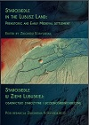
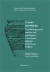
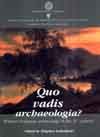
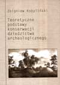
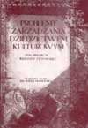
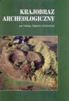
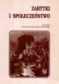
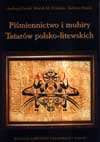
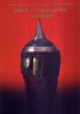

| Fundacja Res Publica Multiethnica | Publikacje |
| Strona główna -> Publikacje |
|
   

 


|
Honor bez egzageracji. Magnackie zakupy i świat rzeczy paryskich w XVIII w.
Honor bez egzageracji. Magnackie zakupy i świat rzeczy paryskich w XVIII w. Konrada Niemira Warszawa 2022. W 2022 roku Fundacja Res Publica Multiethnica wraz z wydawnictwem Neriton wydały monografię dr Konrada Niemiry, Honor bez egzageracji. Magnackie zakupy i świat rzeczy paryskich w XVIII w.. Książkę wydano dzięki dofinansowaniu z programu "Doskonała Nauka" Ministerstwa Edukacji i Nauki. W 2023 roku publikacja znajdzie się na ogólnodostępnej platformie Biblioteki Narodowej, www.polona.pl |